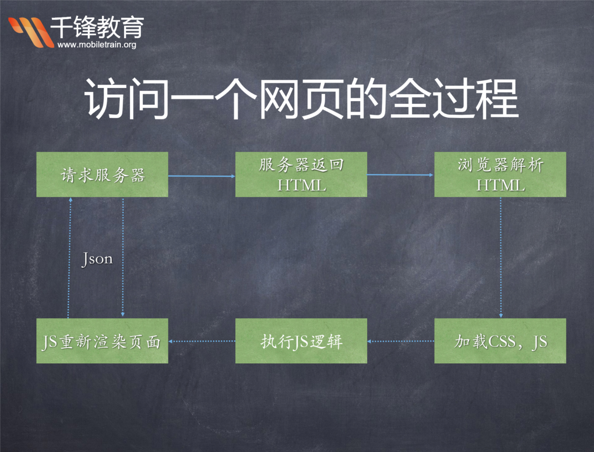

女朋友做饭： 买菜 ---> 洗菜 ---> 炒菜 ---> 吃饭 同步
没有女朋友怎么办？
异步
JS 是单线程的语言，所谓“单线程”就是一根筋，对于拿到的程序，一行一行的执行，上面的执行为完成，就傻傻的等着。例如：
var i, t = Date.now()
for (i = 0; i < 100000000; i++) {
}
console.log(Date.now() - t) // 254 （chrome浏览器）
上面的程序花费 254ms 的时间执行完成，执行过程中就会有卡顿，其他的事儿就先撂一边不管了。
执行程序这样没有问题，但是对于 JS 最初使用的环境 ———— 浏览器客户端 ———— 就不一样了。因此在浏览器端运行的 js ，可能会有大量的网络请求，而一个网络资源啥时候返回，这个时间是不可预估的。这种情况也要傻傻的等着、卡顿着、啥都不做吗？———— 那肯定不行。
因此，JS 对于这种场景就设计了异步 -— 即，发起一个网络请求，就先不管这边了，先干其他事儿，网络请求啥时候返回结果，到时候再说。这样就能保证一个网页的流程运行。
Ajax（ Asynchronous Javascript And XML）
服务器：代码上线就是上传到服务器

传统的web交互是用户触发一个http请求服务器,然后服务器收到之后,在做出响应到用户,并且返回一个新的页面。
AJAX 是一种用于创建快速动态网页的技术。通过在后台与服务器进行少量数据交换，AJAX 可以使网页实现异步更新。
顾客吃饭 | Ajax |
点餐，告诉服务员吃什么，服务员记录 | 准备页面请求，创建XMLHttpRequest对象 |
服务员带着菜单到后厨告诉厨师客人要吃哪些菜 | 使用 XMLHttpRequest对象的open（）和send（）方法发送资源请求给服务器 |
厨师开始工作 | 后台计算 |
厨师菜炒好了，告诉服务员，服务员从厨师那儿取菜，并端给顾客 | onreadystatechange函数，状态改变时发送数据回客户端，使用 XMLHttpRequest对象的responseText或responseXML属性获得服务器的响应 |
Ajax 这个概念是由 JesseJamesGarrett 在 2005 年发明的。它本身不是单一技术，是一串 技术的集合，主要有：
1.JavaScript，通过用户或其他与浏览器相关事件捕获交互行为
2.XMLHttpRequest 对象，通过这个对象可以在不中断其它浏览器任务的情况下向服务 器发送请求；
3.服务器上的文件，以 XML、HTML 或 JSON 格式保存文本数据；
4.其它 JavaScript，解释来自服务器的数据（比如 PHP 从 MySQL 获取的数据）并将其 呈现到页面上。
由于 Ajax 包含众多特性，优势与不足也非常明显。优势主要以下几点：
1.不需要插件支持（一般浏览器且默认开启 JavaScript 即可）；
2.用户体验极佳（不刷新页面即可获取可更新的数据）；
3.提升 Web 程序的性能（在传递数据方面做到按需放松，不必整体提交）；
4.减轻服务器和带宽的负担（将服务器的一些操作转移到客户端）；
而 Ajax 的不足由以下几点：
1.不同版本的浏览器度 XMLHttpRequest 对象支持度不足(比如 IE5 之前)；
2.前进、后退的功能被破坏（因为 Ajax 永远在当前页，不会记录前后页面）；
3.搜索引擎的支持度不够（因为搜索引擎爬虫还不能理解 JS 引起变化数据的内容）；
JSON (Javascript Object Notation, JS 对象标记)
{
"name":"张三",
"age":18,
"like":["抽烟","喝酒","烫头"]
}
XML
<person>
<name>张三</name>
<age>18</age>
<like>
<item>抽烟</item>
<item>喝酒</item>
<item>烫头</item>
</like>
</person>
json是一种数据格式，由对象，数组互相嵌套组成，属性名必须加双引号，数据传输格式
var ajax = new XMLHttpRequest();
ajax.open("GET","url",true); //get请求，url请求地址，true代表异步
ajax.send();
ajax.onreadystatechange = function(){
if(ajax.readyState == 4 && ajax.status == 200{
console.log(ajax.responseText);
}
}
ajax.readyState
0 － （未初始化）还没有调用send()方法
1 － （载入）已调用send()方法，正在发送请求
2 － （载入完成）send()方法执行完成，已经接收到全部响应内容
3 － （交互）正在解析响应内容
4 － （完成）响应内容解析完成，可以在客户端调用了
HTTP 状态码 ajax.status
AJAX状态码说明
1**：请求收到，继续处理
2**：操作成功收到，分析、接受
3**：完成此请求必须进一步处理
4**：请求包含一个错误语法或不能完成
5**：服务器执行一个完全有效请求失败
100——客户必须继续发出请求
101——客户要求服务器根据请求转换HTTP协议版本
200——交易成功
201——提示知道新文件的URL
202——接受和处理、但处理未完成
203——返回信息不确定或不完整
204——请求收到，但返回信息为空
205——服务器完成了请求，用户代理必须复位当前已经浏览过的文件
206——服务器已经完成了部分用户的GET请求
300——请求的资源可在多处得到
301——删除请求数据
302——在其他地址发现了请求数据
303——建议客户访问其他URL或访问方式
304——客户端已经执行了GET，但文件未变化
305——请求的资源必须从服务器指定的地址得到
306——前一版本HTTP中使用的代码，现行版本中不再使用
307——申明请求的资源临时性删除
400——错误请求，如语法错误
401——请求授权失败
402——保留有效ChargeTo头响应
403——请求不允许
404——没有发现文件、查询或URl
405——用户在Request-Line字段定义的方法不允许
406——根据用户发送的Accept拖，请求资源不可访问
407——类似401，用户必须首先在代理服务器上得到授权
408——客户端没有在用户指定的饿时间内完成请求
409——对当前资源状态，请求不能完成
410——服务器上不再有此资源且无进一步的参考地址
411——服务器拒绝用户定义的Content-Length属性请求
412——一个或多个请求头字段在当前请求中错误
413——请求的资源大于服务器允许的大小
414——请求的资源URL长于服务器允许的长度
415——请求资源不支持请求项目格式
416——请求中包含Range请求头字段，在当前请求资源范围内没有range指示值，请求也不包含If-Range请求头字段
417——服务器不满足请求Expect头字段指定的期望值，如果是代理服务器，可能是下一级服务器不能满足请求
500——服务器产生内部错误
501——服务器不支持请求的函数
502——服务器暂时不可用，有时是为了防止发生系统过载
503——服务器过载或暂停维修
504——关口过载，服务器使用另一个关口或服务来响应用户，等待时间设定值较长
505——服务器不支持或拒绝支请求头中指定的HTTP版本
GET，POST
只是不同的发送和请求数据的方式
GET | POST |
参数有长度限制 | 无限制 |
| 放在请求体里 |
明文传输 | 更安全 |
var ajax = new XMLHttpRequest();
ajax.open("POST","url",true);
ajax.setRequestHeader("Content-type","application/x-www-form-urlencoded");
ajax.send("name=zhangsan&age=18");
ajax.onreadystatechange = function(){
if(ajax.readyState == 4 && ajax.status == 200){
var json = JSON.parse(ajax.responseText);
fn(json);
}